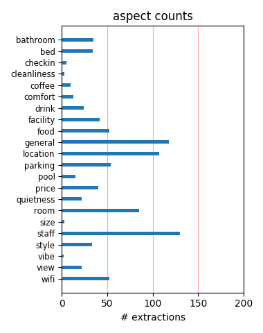
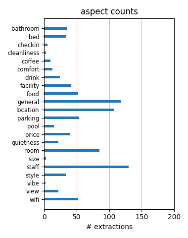

I had a great stay! They had great rooms, and great staff, especially Jason at the front desk. He was very helpful with us on all of our requests and question. I will definitely recommend my friends and family to stay at this hotel.
Rooms are nice and have good size. Staff is very friendly. Many options for drinking or eating nearby. Parking is 32 dollars per day. You need to pay for internet access in your bedroom. Guests are allowed to use the Bally Gim next to the hotel.
Mr. Roy helped me a lot at making the super shuttle resevervation from the hotel to LAX. He was kind enough to spend his time on this even though he was busy. If he would not have helped me, I would have faced lot of trouble in reaching the LAX. Thank you very much Mr.Roy.
Nice convenient location downtown. There are drug stores located across the street and a shopping mall on premise. Club level not open on the weekend. The staff was friendly and enjoyed my stay overall. Perhaps not the best area to be in after-hours. Nothing very fancy but comfortable.
The staff were polite and friendly. They went out of their way to ensure we were comfortable. They gave great advice about things to do and see and how to get around the city. The room was modern with a very large, flat screen tv and great desk space. I would definitely recommend this hotel.
I stayed here when I was in town visiting family. Sheratons are generally nice & decent but I wasn't liking the idea of having to stay downtown. Maricor at the front desk was really nice & friendly. She pointed out some really nice restaurants in the area & things to keep me occupied while I had time to kill.
The downtown Sheraton was very nice, the lobby is very luxurious and my room was on the 17th floor with a fabulous view of the city. The bed was soft and comfy, and the bathroom lined with marble. It was convenient to restaurants, LA LIve and USC events. The daily parking fee is pretty high, so figure that in.
We were upgraded to a corner room because they did not have a room ready after 4:00pm. The service was great BTW, Location was close to good restaurants, and there is a Ralph's 2 blocks away I like beiing able to walk to restaurants and shopping. Only negative, was the hall carpeting need replaced on the 16th floor..
Top of the line for the Sheraton brand. Business atmosphere, but rooms are spacious and upgraded. Not much in the way of views, but it's LA, so not a priority. The best part is the location with 10 min to Staples Center and LA Live dining area, it's ideal. Easy and hassle-free stay. Expect to pay $32 for valet parking overnight.
This experience takes the cake. Filthy room, chairs so disgusting I had to put towels over the seats. Speaking of towels, they are ripped and frayed. The staff is rude who respond inappropriately. The wake-up call was broken, when I called them the response was " its automated." (!?). Plastic cups, old telephones, this place is a rip off.
front desk staff very helpful and courteous. The lobby area is nice, they have 3-4 computers for internet use to hotel guests. Good location, close to major companies in downtown, my office was only 2 blocks away. The mall attached to the hotel closes early. The rooms are acceptable, but the hallways can use a face lift. Overall good location and service.
My Wife and most our her family stayed here in late May 2011. Had a wedding block for my brother in law's wedding and we had a wonderful stay. The hotel was very nice, very clean, and the food in the restaurant was great. Lynda at the Front desk was very helpful and made coordinating our groups needs easy. We'll Definately be back the next time we're in LA.
We stayed here during labor day weekend. Got a corner room with 2 double beds on the 8th floor. Room was spacious. Still looked a bit old even though they said it was renovated. Overall was very decent for the price that we paid ($125 a night with tax and internet). Valet parking was expensive ($32 per night). I would not say this is a 4 star hotel- more likely 3.5 star.
$26 for parking is too much. Especially since access to the parking garage requires one to walk through the attached mall. I suggest skipping breakfast at the hotel. There are several small bakeries and juice joints within the mall, which provide cheaper and quicker breakfast options. As an alternative, I would receommend the Sheraton in Universal City, which is much nicer.
The Sheraton was great! It was conveniently located in the downtown area of LA, surrounded by great restaurants and right across the street from the subway station. The staff were super friendly and gave us subway maps and directions to all the attractions. We stayed on the third floor and was the only floor that had access to a walk out patio. I would definitely recommend this hotel.
Hotel staff was professional, accomodating and efficient. Being connected to Macy's, a food court and other small shops provides options- especially for the single traveler. I usually attend a sporting event at Staples Center and eat and maybe see a movie at LA Live, and they're only a five-ten minute drive from the hotel. My room and the common areas were clean, the bed was very comfortable.
Went on a business trip in LA and stayed at the Sheraton Downtown hotel. It was a nice hotel with good ammenities and friendly staff. Because I am a SPG I had a nice view on the 21st flr which included my own robe and a huge bottle of purified water. Beyond that the location, restuarant and other stores etc was great. I was treated nicely and would stay there again and would recommend this hotel.
Stayed at this property two nights, Feb 22-23. While the first floor amenities were good and the access to a fitness center was helpful, my room was tired at best and less than clean at worst. The room had rust stains in the bathroom, and the main room smelled musty. The hallways showed worn and buckled carpet, and needed a paint job. It definitely did not reflect a four-star rating as noted by several sites.
We had a very short stay at the hotel, however it was very enjoyable. The hotel staff was excellent. I would like to commend one of the desk personnel whose name is GUSTAVO GOMEZ. His courtesy and happy personality was enjoyable. When we needed directions and or restaurant names he quickly supplied them. Because of the staff's demeanor and the fine facility we will stay at this hotel whenever we are in Los Angeles.
On the positive side, the beds are comfortable and the staff was friendly. But the rooms are somewhat dated. More importantly for me, if you are noise sensitive this is NOT the place for you. My first room was ary loud with elevator motor noise coming thru the vent, even though I was not near the elevator. My second room might has well been on the freeway, despite the fact I was on the 17th floor. Finally, the Internet is rather slow.
Only stayed two nights and wished we could extend as we were given a complimentary upgrade to an amazing duplex penthouse suite! All staff we came in contact with were friendly and helpful. The lobby is spacious and welcoming, with free computer access and wifi connection. The bar and breakfast buffet were fine. Our room was clean, the bed was luxurious and the furnishings modern and comfortable. I highly recommend this hotel and would stay there again.
Great hotel if you want to stay downtown. If you go to the bar in the hotel ask them to make you the "blueberry mojito martini" - FABULOUS! Room was good, service was great. It was nice to have the mall attached to the hotel. Had a massage at the Salon located in the mall, Anis is excellent. My friend had a great facial too. The salon doesn't look to great, but the service was beyond my expectations. Try Wokcano around the corner for dinner - very good sushi!
Gustavo, the desk clerk was fabulous. He was very courteous, knowledgable and had good suggestions for us. We were new to the Sheraton system and Gustavo was very patient to explain all of our options. He was knowlegable about options for restaurants in the neighborhood. We were unfamiliar with the streets in the area and Gustavo found us a map and explained about the freeway access that we needed. Gustavo took very good care of us and made sure all our needs were met.
Checked in to the Sheraton on Dec 25th/2007 for 2 nights. Check in was quick and easy and parking was $20.00per night and is attached to mall and hotel. The room was clean and the beds are very comfortable. I was impressed with the $65.00 a night price we paid thru Hotwire. The area has a few bums but not to bad. The area was clean and very close to the Staples center. A very short walk. Mall being attached was a bonus and there are quite a few places to eat in the area.
When I arrived at the Hotel, I was given a room on the 11th floor. I need antivet drugs to travel, so I did not notice until the next day that the elevator gave me vertigo. The staff moved us immediately to a lower floor and accommodated me each time I needed to come and go because I needed to use the stairs. The staff was exceptionally nice and I never really had to wait very long for someone to get me up the stairs to my new room. I give them an A+ for being so wonderful.
.....about every 3 months and my company continues to go back. The staff is extremely courteous and helpful. I 'd like to send a shout out to Roberto Hdez in Banquet who graciously helped me get organized and clean up after my meeting Day 1. Then he came back to help me at the end of day 2 when I was trying to rush out and catch a flight. He made my clean up easier and was a huge help with making sure my boxes got out to the Fedex pickup. Thank you Sheraton, see you again soon!
Following TripAdvisor reviews, I went for this hotel - and was not disappointed. Bedrooms are good size and in great condition. Lobby areas are quiet, yet stylish. Welcoming bar with good food (not cheap though). Best of all, front desk service was impeccable - I did not feel that I was 'another suit in another corporate hotel'. Would gladly stay next time in LA - colleagues who stayed in similar LA hotels reported generally bad experiences, especially in regards to age of bedrooms
Was in town for meetings. Wasn't a bad hotel, room was clean, had good coffee in the room, front desk was quick. The lobby bar was a typical disappointment. Very limited selection, great beers on tap but no Dem. Light beers, warm bottles of beer, SLOW service unless you sat at the bar. Breakfast was ok but it was a buffet and once you ordered they forgot about you. we sat for 15+ min's before we got up to get our bill. Overall I liked the hotel, the rooms was clean and the bed slept well.
Able at the front desk was amazing from the first phone call to check out. Minnie Sanders in Club Lounge was fanatstic and sergio was good. Staff in Terrace always helpul, Manuel, Jose and Rudy. The housekeeping was not up to par(ran out of tp, didnt replace water daily and failed to replace tolietries) 23rd floor is the way to go!! Includes access to Lounge and Minnie:) Parking was a bit high but its downtown. Had a run in with Ingrid but felt that manager Jose Reyes was on top of things.
If you are attending a conference at the Los Angeles Convention Center and need a clean, reliable hotel, this is the place. Got what I expected from a Sheraton - clean, comfortable room and a helpful staff. It is a fair hike to the LACC, but I was on a shuttle route, so that was not a problem. Not much nearby except a pitiful indoor mall anchored by a Macy's, two drugstores and a Qdoba. If you're on a budget and can't afford the Ritz or JW which are closer to the LACC, this is a fine alternative.
Have been staying downtown once a month for the past 15 years for business. I don't expect perfection but was very disturbed with someone trying to enter our room at 230 in the morning while we were sleeping. It woke me. Thank God we had our security latch on. regardless if it was staff which probably it was I could not go back to sleep that night since it really shook me up. Never have I experienced anything like that. The hotel needs upgrades. Very hot in the rooms. Thermastat set at certain temp.
this place is a dump and i have low standards. you cannot escape the prostitutes and homeless after dark. panhandlers constantly @ the valet entrance, hookers there too & in the lounge, i dont mean subtle hookers never felt safe there my entire stay. the beds in the room are top notch, comparable to the westin, the only plus to this place. wasted $650 for 3 nights here, when i could have stayed at a marriott just down the road. oh well, hope this helps, buyer beware of this place, avoid at all costs.
So I flew into LA on Sunday night for a conference at the convention center starting on Monday. I'm an SPG member and I wanted to stay at an SPG property. The Westin towers were too far outside my company's policy, so I stayed at the Sheraton Downtown LA and I am glad I did! Libby at the front desk welcomed me on check in and treated me like royalty. I've never had such a nice room in any Sheraton, EVER. She worked hard to make my stay truly enjoyable. I would highly recommend staying at the Downtown LA Sheraton.
Just wanted to say "hats off" to the staff at Sheraton Downtown. I've stayed here a few times the last 10 years and this time during the busy E3 show and I was very impressed with their high service level. I've travel a lot all over the world and this was probably one of my best stays so far 2011. Everything I asked for was arranged with a smile. Taxi's, luggage, breakfast, laundry and extended check-out (spg gold) I can highly recommend the Sheraton downtown, thank you Victor, Lyndia H, Edgar M and the rest of the team. Stefan ( from London)
I stay at the Sheraton Downtown LA at least once every two months for business. Not only is the hotel in a great location for what I do, but I am always greeted with a smile and welcome back. The hotel is always meticulously clean and the rooms are great. My last trip I was in need of some extra care and Jason Reyes at the front desk was phenomenal. He was so helpful and he genuinly cared about my circumstances. He went above and beyond his job to make me feel taken care of. Thanks again Jason for your extraordinary help and amazing customer service.
I was in town for a week, mostly for a bachelor party, but also to see downtown LA. My trip was divided in half by the party, so I had two difference rooms. The front desk staff was perfect, put me in ultra-clean rooms with nice views both times. They were professional and polite, as was the valet staff. I recommend the Sheraton to anyone who needs a great location downtown and excellent world traveler service. I've been all over the place and the staff here was as good as anywhere I've been. Also, incredibly comfortable beds and pillows. Thank you, Sheraton. I wish I could live there.
I was impressed with this stay the staff was all helpful and the rooms were expectational. The comfort of the beds really let you rest. the hotel is in a great location and the cafe and restaurant is also great. In whole this place is awesome and I know i will be stay their again, and I recommend it to any one that like the best! Thanks Sheraton for the great hospitality. I also want to thank Maricor Lopez for making our stay the best service Ive ever experienced she gave us the best service and helped us with everything we need and I appreciate all of that help. Thank You Maricor Lopez.
strange hotel...the lobby and bar are one floor down from streetlevel, and the meeting room down even further- very odd, as to the hotel rooms ,they are stark outdated utilitarian affairs- nothing really wrong with them, but just not very comfortable for some reason- no fridge or micro, and my little coffee pot would not work...beware as the place charges a dollar for every call , even those made with calling cards ....also staff , esp desk staff ,seemed as if answering the most rudimenatry questions took great effort... would not stay here again- am sure there have to be better places in the area
I was very impressed by our Stay at the Sheraton Downtown. When Air Canada screwed up our flights, I phone the Sheraton and they cancelled our first night's reservation even though technically they did not have to. When our hot water was not working, they gave us buffet breakfast. - free. They gave us a cot for our room -free. They upgraded us to one of the best rooms in the hotel - free. They went out of their way to give us a great stay. Clean rooms, friendly staff, great location - close to conference center, great conference rate. I only wish they had had a swimming pool too. No big deal. I will be here again.
I stayed here on a business trip and I would have to say it is just okay. I usually stay at the Westin Bonaventure and prefer that hotel more. The hotel is getting old and the rooms need worked on. The room was cleaned, it just looks worn out. The exercise facility is horrible and incredibly small. What I do recommend here is the salad at the bar. It was delicious, one of the best ever. It was their chicken salad, and the staff there were very friendly. Parking wasnt great, didnt feel very safe considering it is a mall also so not only other hotel guests. Inside the hotel you felt safer,mostly business travelers and a few tourists.
Stay was for business (large event). Walking into the lobby I thought, "this looks nice, it won't be too bad for a few nights." The lobby and elevators were the nicest part of the hotel. Staff was polite, but not a warm welcome like you get at other SPG hotels. The room I stayed in was on the SPG floor and I would have assumed it would be nicer than others. I was wrong. The thermostat was near impossible to 'fine tune,' the bathroom was not very clean (not to mention extremely dated), and the towels were a bit threadbare. Internet access is an extra charge per day. This was not an awful hotel, but just average and in need of a renovation.
I made a mistake when booking my room at this hotel. I accidentally booked it for a Wednesday, when I needed a room for a Saturday. I arrived at the hotel on a Saturday and they told me I did not have a room and that my reservation was for the prior Wednesday. They did accommodate me and give me a room. They told me I would be charged for the room on Wednesday as well. I'm a long time Starwood Preferred Guest and I can't believe a hotel would actually do this to a client that stays many nights with sister hotels each year. I'm still trying to get them to remove the charge. I can tell you if they don't I will no longer stay with Starwood Hotels.
Today was a crazy crowded day but when my room wasn't ready I waited and then was upgraded to the club floor and a deluxe room! When we went in to the Club room for a snack it was 6:00 pm and nothing was set up. Using the phone in the room, we called down and with in 5 minutes Gustavo came in and got everyone drinks then went and got a nice display of fruit, cheese, vegetables and dips. He set it up quickly and efficiently and had to back fill the entire set up. He was so attentive to everyone in the room, clearing tables, getting ice and chilled glasses. I felt very pampered by Gustavo and after a long drive in traffic it was just what I needed!
The hotel itself was excellent but hidden expenses seemed to be everywher. $30 per day car parking, Wi-Fi in room not free but available at a price i cant remember - however there is free Wi-Fi / computers in reception, not handy when you're on the 15th floor. Bottled water in room at $6 a bottle. The one thing that did really annoy me is the fact there was no safety deposit box in the room- which seems standard in US these days, the're available behind reception but too be honest are so dated and small its easier to carry your stuff round. Nice hotel which i would probably stop in again knowing the hidden charges but wouldnt recommend to a first time visitor.
I was in LA for a business conference and decided to stay at the Sheraton because of its proximity to the LA Convention Center. Overall, the hotel was fine but the rooms did seem a bit old and I had a superb view of the office building across the street. However, I was checked into a large 1bdrm suite which was nice. PROS: - Large room - Clean - Efficient staff - Access to the Bally Total Fitness - Close to Rite Aid and other stores CONS: - The room furnishings are rather old - The tvs are quite old and small - You need to pay for internet and the speed is very slow at peak times (guessing that the entire hotel is sharing one connection) - Bar closes at midnight
This hotel lives up to the Sheraton name. The location is strictly for business, with the addition of sports and concerts at the Staples Center I bet. The hotel has been here awhile, but room decor and amenities have kept up with the times. My room was great in every way. Well worth the price. People really do make the difference, and you will find some of the best desk clerks here you will ever meet. The person who checked me in was exceptionally fast and friendly. I came back later and took advantage of no lines to ask another desk clerk a question or two about nearby attractions. He was full of suggestions and helped me with airport transportation the next day as well.
The hotel is average but avoid the Jr Suites! A quiet sitting room adjoins the bedroom and the bedroom wraps the elevator shaft! In general he rooms are "standard" but a bit drab/dated. The dark interior lobby(s)...there are multi levels...are connected by escalators. The meeting rooms are in the sub subterranean levels which translates to no cell/internet service in the lowest level meeting room. When the escalators aren't working..oh well! The hotel located as part of the Macy's shopping center has lots of food courts and the hotel has an upscale dinner restaurant and a nice breakfast area. Bottom line is that it is an OK place to stay if downtown LA is where you want to be.
Not being a big fan of the city of Angels I still had a nice stay at this Sheraton. Parking is of course expensive, $28 a night. The mall next to the hotel is pretty tired as is the food court. The staff was polite upon checkin and offered to hook me up with a Starwood preferred corner room which was nice. Internet is currently free, but only because they haven't fixed the bugs in the new system, otherwise its $15 a day. The staff at the bar isn't very friendly and they like to close early. They may be on the job less than four hours a night, so its very disappointing when they close up at 11:45 pm. I suggest Wokano, a sushi bar around the corner. Its open until 2 am and has good food.
I can first start off by saying it is not worth the $220+ price to stay here. The one thing that REALLY bothers me is when these "high end" hotels charge for internet access. What a bunch of BS. There is a local, economy motel in my town that offers free wi-fi and only charges $30. It's even more ridiculous when almost every mid scale hotel offers free wi-fi for its guests. Another thing that really bothered me was the old, small TV. I guess I've been spoiled by Holiday Inn Express, which is starting to offer 30+inch LCD's and Hyatt Place, which has a 42 inch Plasma with almost all HD Programming. Also, do not expect a mini bar in your room. So much for being a Sheraton "high end" hotel.
We picked this hotel for its proximity to LA Live. For the price we paid we were disappointed at how dated the rooms were. The room had a faint smell of old water although the room appeared clean. The beds, dresser and TV were the only furnishings that seemed to be updated in the last decade. The closet had old mirrored doors, the bathroom had a sink faucet from 1980 and overall had a time warp feel. The light switches were dated along with the lamps, phone and alarm clock. This hotel's only saving grace was its modern lobby which includes a restaurant, Starbucks, internet area and a small TV 'living room'. Also, another positive was the free parking across the street at a meter on a Sat night to Sunday.
I stayed at the Sheraton Los Angeles Downtown while attending a professional conference at the Convention Center. Over all my stay was above average, however, I felt it was inconsistent in service and amenities for a Sheraton. Check in was great and my room was spacious and comfortable. I was disappointed in the hotel information provided in the information folder. There one one sheet of paper explaining room service. That was all. Upon check out, I did not receive a bill under my door as I was expecting. When I went to the desk, it was clear that was something that should have taken place. The staff was friendly and helpful, the food at the bar and casual resturaunt was terrific and priced appropriately.
Upon checking into the Sheraton, we turned the A/C all the way to high, went out for three hours, and came back to a room that was still hovering somwehere around Purgatory. The bulilding engineer clocked the temperature on the inside of the south-facing glass at 141 degrees. No wonder the feeble A/C couldn't keep up. Moving to the north side helped quite a bit, but we still needed a table fan to keep air flow at night and to drown out the street sound. Rooms and hallways show their age. On the plus side, the employees are universally well trained and friendly. We have nothing but good things to say on that score. Parking was included in the $119 rate (a special rate for the LA Travel Show), which saved us $28/day.
Very nice stay at downtown Sheraton for a conference in LA convention. Although the hotel lobby is not the most up to date, the room was very comfortable, well appointed and quiet, and the bed was extremely comfortable. Staff were friendly and accommodating. The club on the concierge floor had a basic but tasty hors d'oeuvres selection, with wine and beer for a fee. The hotel is directly connected to a mini-mall with Macy's, health club and other shops. It was a 15 min walk to the convention. Lots of restaurants a short cab ride or walk away. To save on the $50 cab ride from the airport, I took the flyaway bus to union station for $7 just outside baggage claim, walked through the station and got a $12 cab to the hotel. Turned out to be pretty quick.
Stayed here with my father and two brothers. We came down to see the Dodgers and this seemed to be close to Dodger Stadium. Nice Hotel, attached to a Mall that I never went to. Parking can be pricey, but there are some cheaper options nearby to keep those costs in check. As it says, this hotel is located in downtown Los Angeles. I assumed there would be a million things to do around here... After the Dodger game on a Tuesday night my brother and I went for a walk to find a place to get a beer or something. It was like a ghost town. I am sure there was a lot of cool stuff going on somewhere in L.A. but it certainly wasn't anywhere near this Hotel! That said, the hotel was clean, the staff was great, and I have nothing negative to say about this place.
Stayed here 3 nights for the LA Times Travel Show. the conference center is a 10 minute walk, LA Live is a 5 minute walk, the Staples center also. Downtown is not the best location for tourists, but if you do stay here you have some nice options to eat (LA live). The hotel itself was great - the rooms were clean and had everything I needed. The staff was EXTREMELY helpful - I got a suite upgrade, they reserved a great LA tour for me, and by day 2 knew me by name and greeted me in the lobby. The hotel has a bar, restaurant, starbucks, a little store, and is connected to the mall and a Macy's so you can shop without going far ;) The only downside was breakfast - I do not suggest you spend $20pp on a sad buffet. If you do not like noise, ask for a room far from elevator.
The people working on this hotel are great. They know how to treat there customers. Really enjoyed my stay. Booked on hotwire and got a great rate. The beds are really good. For my trip I stayed in 5 diffenete hotels and the beds of this hotel are the best of them. We took breakfast there not cheap for the things they offer but again the service was top notch. The area is downtown that who is familiar with downtown knows what to expect. After 7 at night evrey were is closed. The plus is that there is the metro opposite the hotel and a rite aid. Great hotel with great staff. Good for public transport. Took the metro to go to hollywood 15 min universal 20 min. I took also the bus to santa monica from in front of the hotel took me 1hr 10 minutes to arrive to santa monica.
The hotel was nice and the service from the hotel worker's was great. You have FREE access to a Bally's gym right outside of the hotel. This hotel is not located close to the normal tourist stuff. It took about 45-60 min to reach Santa Monica on the bus system. It took about 15-20 min to reach Hollywood by train. The hotel bar had some really good food for diiner but the restaurant had a different menu and it was not as good as the bar food selection. The hotel was close to both the Metro stop and train stope. Was upgraded to a suite. We were warned that it was next to the elevators. My wife is a light sleeper but it did not bother our sleep. It is within walking distance of LA Live area. The hotel is more suited for business than for pleasure but it was still a nice stay.
Located across from the 7th Street Metro, this is very convenient. In a good location of town where you feel relatively safe walking around this hotel is attached to the Macys plaza. I did not eat at the hotel as there were lots of good eats nearby and for breakfast the food court in the plaza had options. Had great service and the maid got to know that I perferred extra regular coffee (Starbucks) for the in room coffee maker. One day she even dropped off fridge with no charge. Took advantage of the lobby bar drink special on Friday. Lobby is actually in the basement but there is escalators. Parking nearby if you need it can be had for the cheap in outside lots. Got a $101 nightly rate through Expedia but the hotel still honoured my Starwood membership with slightly upgraded room.
I stayed here just for one night after a trip of 20 hours! It was a very nice and quiet room, with the heavenly (Sheraton) king bed, right what we needed after that trip! On next day we went to LA Downtown, during the morning ,which is not very interesting: I just liked to see the Walt Disney Concert Hall and Stapples Center with the Nokia Plaza in front of it. The Cathedral was a disapointment (it is not that I was expecting an old cathedral, as the US obvisously don't have them, but in NY you can find a nice and modern Cathedral...). We had lunch at the bar (as the restaurants in the mall next to the hotel seemed to be quite empty and not very inviting!) and the sandwiches with fries were delicious! The service at the bar was very good as well. All the staff was very friendly and helpful!
This was a huge disappointment for a central city brand-name hotel. I expect more from a Sheraton. The lobby is OK, but the rooms desperately need updating. I totally agree with the assessment by snojones509 in March 2010. The walls are paper thin, traffic and party noise kept me up. There are no amenities. The service was OK, but nothing special. The four free internet stations were always full and the rooftop bar (Polaris) was empty and, I think, closed except for private events. I called three times to get my room cleaned, and they finally came at midnight with just clean towels. The location was the selling point for me, but the mall that the hotel is in is dated with many closed shops. The saving grace was the Bally's and the lobby bar. Otherwise you can do better at the Omni, Wilshire Grand or Westin.
The Sheraton Downtown Los Angeles is the best you can obtain in the area for pricing, quality and customer satisfaction. I have known this hotel for three years and I am impressed whith the incredible customer service that I have always obtained from Maricore who is always available to take my phone calls at the front desk, to make reservations, make suggestions and to answer any type of concerns. She is always on top of everything and makes things very simple for me as a traveler who is always in a rush. The whole staff is great but ask for Maricore! Rooms are spacious which makes your stay very confortable, beds are also great. It is hard to obtain large and confortable rooms these days at competitive prices like this hotel. Overall this is a great choice to anyone planning to stay specially for business trips.
This hotel has great customer service. Quick, friendly, and knowledgeable of the area. The rooms are very clean, the beds are very comfortable, and you get two sets of pillows, foam and feather. The price of the food is comparable. The hotel is also connected directly to a mall. You don't have to go outside to shop. I was here for a conference. There may be free internet access, but I think it depends on your room rate. I got a discounted rate, so I had to pay $12.95 for internet access, which is comparable to other hotels in the area. There is a gym the hotel uses, and guests get in free. There are treadmills, bikes, weights of all kinds (free and machine), and I do think they have yoga classes available. You didn't have to wait for the equipment, there is lots of it. No swimming pool, however. I would stay here again.
I was a little wary about this hotel after reading the review on here, but my experience couldn't have been better. I got a pretty good deal on a package through Expedia, so it was a good value for what I paid. The room was standard for a 3.5 star, business-friendly hotel, and certainly not less quiet that any other urban hotel I've visited. I used public transit to get around LA, so the location was absolutely perfect (centrally located in a pretty upscale part of downtown with bars and restaurants within a few blocks, across the street from the Metro station, and a few blocks from all the major bus lines). The staff was very friendly (though I only encountered them at check-in/out and in passing) and the computers in the lobby with free internet and a drugstore across the street were convenient. It was a great experience and I would stay there again.
My overall experience at the Sheraton Los Angeles was just ok. Although the hotel was very close the metro, I was not aware that it was under a Macy's mall thereby making it accessible to undesirables that can enter the hotel at anytime. I was approached by someone for money and that made me uneasy as I had my child with me. The downtown area has a lotto be desired and the hotel reflects that. It needs a general overall of the fixtures,carpet and rooms. I have stayed at much better Sheratons. I was happy with the Sheraton link which was convenient and the restaurant was good however it was pricy. The best part visit was the customer service. Everybody was very accommodating and it was definitely a plus to have access to the Bally's next door. As this was my first visit to LA, we made the best of it and had a ball however, I will not stay at that hotel again.
o.k so it's not at the best location for hollywood and the beach but it's only 20 minutes away by metro which is directly outside the hotel, $3 for a day pass makes it easy on the pocket. the hotel itself is of a very good standard with the usual shop for bits and bobs but is lucky enough to be next to a mall which has a macys, bathworks, post office, carls' jr and robeks to name a few. the beds are a dream, plenty of pillows and comfortable to boot! the front desk are helpful and the concierge are good at their job, the bar is a hotel bar and the staff are not fully up to speed when it comes to service. there is a grill room which i used once and would advise against, there is a ihop and dennys round the corner that give better value. if you want peace and quiet rather than a bustling nightlife and are not bothered about jumping on the metro to get places this hotel is for you
I stayed in this Sheraton for a week recently, and found that it fell below the normal Sheraton standards. Here is a list of its inadequacies: 1. There is no safe in guest room for storage of valuables; 2. There is not a swimming pool; 3. There is not a convenient self-parking space. Self-parking actually uses the parking space of an adjacent mall. To go to the parking garage, you would have to go down to the ground level of the hotel, walk to the mall, and then take a mall elevator to the fourth floor parking space. Very inconvenient. And they charge $28/day for this; 4. There isn't a gym in hotel. Guests have to use the Bally Total Fitness facility in the adjacent mall; 5. There isn't a second phone in bathroom; and 6. In twin-bed rooms, there is only one small nightstand shared by both beds; The location of the hotel, however, is quite good. It is right in the city center and still close to freeways.
The Sheraton has an elegant feel. Decor is a cut above your average motor lodge. However, I feel that the decor is not worth the price of the rooms. Mainly, you are paying for the downtown location, and, boy, do you pay. Not only does the room cost $75 more than a comparable room in a different part of LA, but also you pay an extra $22 for parking and there's no free breakfast. The fitness center is pretty poor; even the hot tub was closed. The parking is strange, forcing you to walk through the mall to get to the hotel. However, I did feel safe at all times even in downtown LA, and the beds were comfortable. The room AC was central as opposed to the noisy wall units you get at motor lodges, but we had trouble getting the room cool enough to suit us. We walked to IHOP for breakfast. Go out the Flowers St mall exit and turn to your left. For dinner we took the metro to Union Station ($2.50 roundtrip), and ate on historic Olvera Street.
My first stay at this property dates back to the times when it was know as the Hyatt downtown LA. The hotel went through a renovation some years ago which regretfully did not encompass the bathrooms and there is a contract in the quality of the finishes between the bedroom and bathroom (I do not sleep in the bathroom so that's not the end of the world). The only downside was the "high speed internet" which is officially provided through AT&T (with remnants of a previous provider) which was neither high speed nor reliable (kept on dropping my wireless connection to our corporate server) I ultimately gave up and used my mifi 2200 which was more reliable and faster. Now for the really good stuff: What I noticed this visit which really struck me was the level of service which we experienced throughout the hotel during our two night stay...the staff was really "polished" and seemed genuinely interest in making your stay pleasant. I was very very impressed.
The rooms were fine and it did remind me a little of Comfort Inn, the price was a little high, the parking was expensive and difficult to get in and out (yes, the ticket did not work for us either at first). We had breakfast at the hotel - wow was it pricey! The most annoying part about our stay at the Sheraton was the incorrect information I received at checkin. I was told the price of the parking. When it came time to checkout and pay for that priviledge the next morning, turns out the the price was much higher then I was told. Worse, the 2 people behind the reception desk were very vocal and rude when I mentioned that the person checking me in quoted a different price. Don't think I will stay there again. I know there are places in LA that treat their customers with respect. This was not one of them. By the way, downtown LA is not a good place to hang out at night. Most of the shops are sealed shut and various interesting characters are walking around.
We got a discounted prepaid rate for a standard room at the Sheraton. We were put in a fourth floor room. Room seemed nice enough but had an exposed overhead unfinished fixture in the bathroom. Beds were the super comfortable 'heavenly bed' you can expect at any Sheraton/Westin. Armchair in the room had stains on it. We asked if anything else was available, but several business meetings were going on that weekend so the front desk indicated the only alternative was a room on the club floor but next to the service elevator. Pros - guests have free access to the Bally's fitness next door and many great restaurants in walking distance. Parking for this hotel is a ripoff at $26/day in the shared shopping mall parking. Later we saw all day parking available at $8/day across the street! Room service for breakfast provided an extremely overcooked omelet. Missing amenities were quickly provided by housekeeping upon request (shower cap, extra toiletries and towels).
I booked this hotel by hotwire, and as we don't know the name of hotel we got, until we had already paid, i was worried about that, but the hotel itself, in my opinion matches to the 4 stars it has. The room was spacious, well cleaned and with nice amenities as tv, minibars,flat tv, nice furniture and nice bathroom. the hotel is not really new but is well maintained, nice lobby, free internet service (in the lobby) easy access to metro and a fitness gym (charged). There are a macys and many others shoppings located in the building where the hotel is. cons.: downtown is far from the most of sightseeing of LA, so is better stay in another neighborhood if you're as a tourist and i didn't feel safe walking in the streets at night. parking is expensive, You'll pay $ 28,00 a day for a self parking, vallet is a little bit more. But if you don't mind walking, there are some garage buildings near the hotel that are cheaper. breakfast is not free but you'll find many options in the hotel or in the complex of the building.
This hotel was, in my opinion, very average. Room service arrived cold (though the staff was very friendly). The hotel’s restaurants kept odd hours, so we would have to step out for lunch (it simply wasn’t served). There was an odd “Being John Malkovich� type small cutout door in the bathroom … not exactly sure what it was for?? The hotel layout is a bit annoying: you have to go up a level to catch the elevators, but you can take the elevators down to the ground level (not having the ability to do both is annoying – if security is an issue, perhaps other measures should be taken as well). Cabs were abundant, and I believe there was mass transit nearby. I was in town for a convention at the LACC, which was within walking distance (so the Staples Center is just as close). There are plenty of decent bars and restaurants in the area, so you won’t feel like you’re missing out at the hotel. Regarding the view … it’s downtown, so there isn’t one. All in all, just an average hotel - nothing spectacular
First off, I am a traveler. I do not "vacation" once a year at a Hilton. That said, this is one of the finest hotels I have been to. The convenience and style may not be the most leisurely, but the service is superb! I was BLOWN away at the staff. I am the CEO of a clothing company, and I was driven to ask every employee where they learned their outstanding service skills. Everyone attributed their skills to the Sheraton hotel "brand training." By service, I do not mean annoying waiters asking you questions every five minutes. We were staying downtown for a trade show at the convention center The location was very nice, and close to many restaurants. We were so impressed with the hotel's restaurant. I would compare the quality of the food to Bobby Flay's in Vegas. Please ask for Edgar at the Concierge desk and Martha at the restaurant. You will be very pleased you chose this hotel. Be prepared to pay for the bill, but it is well worth the relaxing experience in the center of LA! I will be staying here for every trip form now on.
I stayed here for 3 nights on business. I got a great rate through AAA (about $100/night with prepayment) which is why I chose this spot. Pluses: The location is great, and the common areas are very nice. The room and bathroom were good sized (I was given a room with 2 double beds). I ordered breakfast from room service and it came promptly and was generous - but expensive. Minuses: The rooms look like they haven't been updated since the 70s. I had to have Engineering work on the ventilation system because a constant whooshing sound kept me awake. They improved it, but couldn't make the sound go away. I was offered another room, but the noise was comparable so I stayed put. There's only one phone in the room and it's across the room from the desk -- so I had to take my computer to bed when I had phone meetings. No speakerphone. Very expensive Internet ($12.95/day) and they charged me twice in the same day because the access runs from 3 pm to 3 pm, so I paid at 8 am and again at 5 pm. Parking is $30/day, which is standard for downtown.
My company had a dinner/meeting with very important clients in August. I was incharge of setting up marketing packets, promotional items, and all signage, so I arrived an hour before the event. When I arrived Manuel Cazares the Banquet Captain immediately introduced himself and escorted me to the ballroom. He let me know everything was ready on their end and asked if I needed help. I requested easels, help with hanging signs, and setting up the marketing materials. Manuel delegated the tasks and within minutes everything was done. I had a few more special requests and he and his staff assisted me with each. Manuel and his staff went above and beyond to ensure we had a successful event. I was extremely satisfied with the service I was provided and have had a couple more events at this Sheraton since. If you want to have a great event I would highly recommend this hotel for special events. I also highly recommend Manuel Cazares, Banquet Captain, along with his team. I can reassure you that they will provide you with exceptional service!!!
This hotel is outstanding. From the moment I arrived and was met by the valet parking attendant, I knew this was going to be good. Check in staff was pleasant and helpful. I think because of my status, which I think is only preferred and not even to the silver level, I got a free breakfast buffet coupon. It was a full American breakfast buffet. Great surprise! The hotel room was clean, updated and you have to love the bedding. Only two comments and they are both nits: 1) during the check in process, the check in staff person stated, “the valet parking costs are included in your bill�, which I thought meant “included in the price�, but what he really meant was the cost ($32) for the valet service will be “added� to the bill. 2) It seemed like the hot water was running low (I was on the 20th floor), as I had to keep increasing the hot water amount during my shower. Kind of an odd experience at a hotel, almost like being at your house after several people have taken a shower. Overall though, a great hotel. Highly recommend this place
I booked a room here because I was attending a two-day seminar being held at the hotel. It served its purpose . . . PLUSES: -Price was fairly reasonable for downtown LA (used AAA discount; no discount relating to seminar, but I assume that is the fault of the seminar provider, not the hotel). -SUPER friendly service from all the staff that I encountered. -Clean rooms. -In my situation, location was convenient since the seminar was there. -Good location in terms of being on the edge of downtown LA, such that there was no traffic within downtown to get to the hotel once you get off the freeway into downtown (and super easy to find). MINUSES: -Really bad cellphone reception (even for smartphone 3G networks), ESPECIALLY on the conference floor (i.e., basement), which I had no reception at all and had to turn off my cellphone to prevent the battery from draining. -My room was pretty outdated and could use a renovation. -Parking is over $30. -WiFi is not free. OTHER: -Adjacent to a shopping mall, which could be a good thing or a bad thing, depending on who you are! The crowd seemed to be a combination of business people and tourists.
We were in town for a concert so we specifically wanted a hotel near the Staples Center/LA Live. Great stay for location and rate…..Modern lobby with huge lounge area and plenty of seating with cocktail tables for business travelers. Clean spacious room, very comfy beds. Very friendly and accommodating staff….Stay includes access to Bally’s Fitness which is connected to Hotel in Macy’s Shopping Center. You trade filtered water for full-service gym with plenty of aerobic machines and access to Ballys Fitness Classes
I travel every week for work and I have to say this was the grossest hotel room I've ever stayed in. The walls were dirty, the carpet was soaking wet in several spots, I think I may have been on a floor that allowed smoking, the room reeked of smoke/must. The bathroom was outdated had someone else old black hairs on back of toilet and shower. There was a false fire alarm one early morning, with a lot of frantic guests and maintenance guys, they ultimately let us know it was a false alarm, but not quick enough. The TV was a newer flat screen, but would not stay turned off and keep turning itself back on, while trying to sleep. The bed was extremely hard and the towels were horrible, tiny, scratchy, varying shads of white-ish. The maid did not provide cleaning service the first day and there was no apology, just an offer to bring towels. The ironing board was in such poor shape I could not adequately iron my suits. Between the smell of stale smoke and wet carpet I was just so grossed out. Also there is no safe, wha?? The number one worst problem with this room/hotel is the AC, there is no direct control over your room temp, only a switch that allows more or less air to flow, the room was too hot for me to be able to sleep well. Room 514.
The Sheraton hotel was a great hotel to stay at. My wife and I had a lot of fun and plan on coming back next year. The hotel is close to the staples center and convention center, so watching a game there or any event is an easy 15 minute walk. What I love about this hotel is that it's so close to the freeway (in a quiet sense), and there's public transportation all around the hotel, easy accessabile for anyone looking to go to Hollywood and other major attractions. A special thank you goes out to Jason at the front desk from my wife and I. We appreciated his extended kindness and extra mile he went for upgrading us to a good room. He made our stay more enjoyable after a recommendation he gave us for a resteraunt in Long Beach and a connection he had with the manager to get us a beautiful city view on a last minute notice. Another good factor about this hotel is the free internet and printing services they have in the lobby, great for printing out my boarding pass. We had a corner room and what's nice about these corner rooms is the type of view it has on a 3-D angle, but you have to be pretty high up to get a decent view. It's true what other reviews are saying about their beds, they are so soft and lovely. We are actually thinking of purchasing one ourselves.
I stayed here in order to attend a friend's wedding. I booked a double room but they were able to give me a king size bed room when I arrived. I had to rely on public transportation since I don't drive and this hotel is right across the street from the metro. It is also across the street from Walgreens and CVS (or was it Rite Aid?) so picking up nick knacks was easy. I liked my room on the 9th floor but it can get noisy out in the hall way. I would hear people walking back and forth and workers wheeling things. I ordered room service one night and find it to be a bit expensive but my salad was delicious. It was nice that they have computer free for use in the lobby for up to 45 minute intervals. That allowed me to check my email quickly without having to pay for wifi. I ventured out to the mall next to the hotel and found this beauty store down stairs. I got my brows waxed there for $7.5 and thought that price is not bad, but she almost freaked me out because she took 30 minutes doing it and she had to find her glasses mid-way. My brows turned out great but the time she spent and the whole experience did get me worried. All the staff that I came across (check-in staff, room service person and delivery staff, staff that I see in the hall) were all courteous and looked willing to help. I liked my stay here and wouldn't mind staying here again.
My family and I just returned from a weeklong stay in California. I booked the Sheraton San Diego and Los Angeles Downtown. Both hotels were fabulous with some of the best staff in the industry. I received a great deal through priceline. The Sheraton Los Angeles is a beautiful hotel, which as mentioned is in the business section of town. I loved the adjacent mall with Macys and Bath and Body, Footlocker, and an Wells Fargo ATM. As mentioned, there is a subway stop across the street. I love the budget friendly restaurants nearby and the Rite Aid right across the street. We received a very spacious corner room. The hotel has a very upscale look, The only downside was that we encountered problems with the elevator system. Apparently, they are designed to not always stop at the first floor, which was the street entrance level. We had to ride up and down trying to get to the first floor. Also, we were there when there was Sports award event, and several sports stars were staying in the hotel. My grandsons were able to get autographs. The hotel is very close to the Staples Center and Convention Center. We also took the VIP tour, which stops at the hotel each day. Also, the hotel provides computers and free internet service in the lobby, which my family really enjoyed. Overall, I was impressed with the hotel and will return on my next trip to Los Angeles.
My husband and I stayed here for 2 nights for USC parents weekend. We arrived very late the first night (11pm) and they said they had overbooked (never heard of that before in a hotel!) Nevertheless, the very nice guy at the desk (Gustavo Gomez) said he could upgrade us to a room that normally costs $500 if we joined the "Starwood Club" (for free), which we did. So we got a room on the 23rd floor. We expected it to be spectacular with that build up, but it was just a normal room, nothing special, as expected for $169/night. They also threw in complimentary continental breakfasts too, which was very nice. The rest of our stay was really nice too. The cocktails and appetizers at the bar downstairs are excellent. Be forewarned that a continental breakfast does not include the hot items at the buffet -- we made that mistake the first day and had to pay extra. Another feature of this hotel is that it's pretty easy to get to USC. We decided not to rent a car for this trip and it paid off. There is easy bus transportation to USC from about 2 blocks away on bus 81. And a cab between USC and the hotel is only about $15, including tip. So it's much cheaper than renting a car. All in all, a nice trip and we would stay at this hotel again. Next time, though, we will check in earlier!! They said if you can't be there in person to check in, you can simply call in.
this hotel is just not good and i suspect the management just do not want to do a better job, it has cost cutting written all over it. the lobby looks great but when you get to the rooms, they're shabby and unrenovated. not nice but no-one stays in a sheraton for the room decor. however i would expect the service to be better but it failed on mutiple counts. - i asked for a room away from the elevator. the front desk woman said she would give me one. i could see the elevator from my room. strike one. - my trash can still contained the previous occupant's trash. strike two. - the two wake up calls i ordered did not happen. strike three. - the room service menu has pretty much nothing on it. i ordered a pizza that was not edible. store-bought base with fairly raw toppings. strike, um, four. - there is no gym. the ballys next door, which is available for guests, does not open until 8am. strike five. the main problem here is this is a licensed property not owned or run by starwoods. i suspect that's why standards are low. but i had expectations of better, as sheraton hotels have dramatically improved over the past couple of years. this, however, is the hotel that time forgot. i would have told the management that they run an inferior operation. but no-one asked me my opinion when i checked out. do not stay here. it's just not a good hotel and does not deserve your patronage.
I stayed here as part of a week long stay in LA where I also spent nights in the W Hollywood and the SLS Beverly hills. The SLS is a beautiful hotel, but for my final 2 nights I was mainly going to be working, and I didn't see the point of spending $600 a night on a suite when all was going to be doing was sitting behind the desk. So I decamped to the much cheaper Sheraton Downtown. And what can I say? I really was very happy there. It's a mid tier Sheraton, not the newest but not the oldest either, and the area of downtown is actually pretty OK with Macys, Starbucks, Walgreens all very close. Everything you need. I also really liked Octopus (sushi restaurant opposite) which served pretty decent sushi that was also, like the hotel, great value. Top marks go the staff who were superbly friendly both on the front desk and around the hotel, exceptionally so in fact - it was them that made me decide to write this review. One negative is that the hotel does not have it's own gym - instead you sign into the Bally gym in the shopping arcade. The distance is not a problem but the gym is fairly horrible, a fairly old 1980s style place. So if you do like a nice private hotel gym, you'll miss that here. So in summary, it's not somewhere I'd bring a date to impress and won't be on my top 10 list of hotels, but for a solid Sheraton to kill a few days working in LA in, it did a great job.
We stopped off at the Sheraton Downtown after flying in from London. Booked in on the preferred guest club floor. We had very good service form all staff members, from the valet - you drive down from the sweep in drive to the carpark, where there is a large area to stop unload and let them organise the bellhop and valet the car. All very organised. Desk staff pleasant and efficient - offering us an upgrade but letting us know it would be near the liftshaft - fine, do for 1 night we declined. Room was fine. Sure not a modern swish one but large and with good essentials. Bed was v comfortable. Bathroom fine, again against one that is newly done it looks old, but all worked fine and I don't see a problem. Only thing that should get urgent attention was the aircon unit because it couldn't be turned off properly - and a mechanical rattle continued through the night. Too tired to call down about it, and it was late anyway. Did note it on the comments put in though. Club room is small but good breakfast items available - fruit bowl, cereals, toaster, pastries etc etc, and again pleasant efficient staff. The bar downstairs in the foyer did a good job of watering and feeding us in the evening with choice of TV showing sport, and on this night Dancing With The Stars. Good service here as well, and basic but well prepared food. Good business hotel or for anyone needing a place in Downtown.
The Good .. Location in the downtown area (easy walking to center city locations) Parking is easy and convenient (self-parking or valet with in-out at a reasonable price) in shared parking arrangement with the Macy's shopping center ... allows for early morning parking before check-in, so check-in later easy and convenient to car. Room was very nice with king size bed, bathroom, sitting chair and table, flat screen, working desk and chair, internet available (wired or wireless) Lobby area nice with internet kiosk (free wired and wireless), lounge area, bar and restaurant (restaurant really important since downtown Los Angeles restaurants close in the early evening) Food court, shops, Bally fitness center within building Improvement Opportunities ... Internet service had problems in the room (wired connection did not work and wireless very slow ... staff were not very helpful in resolving the issue) ... and the $12.95 charge per day for a ranked hotel seems high and not necessary (should be free) Internet kiosk was always crowded ... small for the size of the hotel ... and inconvenient for guest staying in a high rise hotel Television remote did not operate very well, movies were expensive ($12.95), and the selection of TV channels seemed limited Location of hotel good for daytime walking ... but evenings are better spent indoors Hotel value good if you get special or reduced rate ... not so, if you pay full published rate
This hotel is conveniently located downtown, within a small shopping mall anchored by Macy's Express. Gustavo at the reception made check-in fast and pleasant. The room was spacious, well-appointed. Elevators were busy and a bit slow. Although it is within a block of a Metro station, it is more likely that you have arrived at the hotel with a car as we did. The parking situation was confusing when we read up ahead of our arrival. Public parking at Pershing Square is a good 7 minutes walk away, inconvenient and not recommended. Do not park on the street, since a ticket will cost more than daily parking rates. If you bring your car and do not plan to use until you leave, park at a lot across the street on Hope for $5 all day. If you plan to use your car frequently during your stay, the rate of $28 a day with in and out privilege in the garage above Macy's, next to Sheraton, is reasonable, compared to $38 at some hotels nearby. Entrance to this garage is on either Flower or Hope and be prepared to drive roller-coaster style to the 4th floor to park. Valet parking is also available, at $32 daily, including the inconvenience of waiting for car delivery at the Hope entrance. We were pleased with our stay at Sheraton Downtown, and plan to return in the future. If you stay here, please do plan to go to Bottega Louie, a gourmet patisserie and restaurant one block away on W 7th St and Grand for memorable breakfast, lunch or dinner.
I was offered a free upgrade to a 2-room suite. The clerk actually said, "if you are a light sleeper, you might not like this room, it's near the elevator," but since I'm a solid sleeper, who also travels with a white noise machine, I figured it would be no problem. Oh my goodness, was that ever a horrible mistake. I barely slept that night. The thrumming, clanking, machinery noises switched on and off irregularly all night. Every time I got used to them, the pattern changed. The white noise machine was no help since the vibrations went right through the floors and wall, it wasn't just a noise you could block out. I finally got to sleep very late, then was startled awake at 3 am. I thought about getting up, repacking everything and moving rooms, but it was already so late and I had a big presentation the next day! It was easily the worst night of sleep I have had in a hotel since I stayed in an un-air- conditioned Howard Johnson's in 1992. The next day when I went to switch rooms they didn't seem surprised at all. . . I don't know who could sleep in those suite rooms. A homeless person accustomed to sleeping under a noisy bridge? Someone taking Ambien who is thus completely drugged out of their mind? Someone who drank about 40 martinis and then passed out? If none of these descriptors apply to you, then avoid those suites. The regular room I switched to was fine, no complaints. Relief! They should convert the elevator-shaft suites into broom closets.
Arrival was very stressful and it was all thanks to Valet Parking Man Screaming his head of on everybody who was pulling in front entrance and not requesting valet parking, telling us we have to drive to car parking, even thought we haven’t checked in ye and don’t have parking ticket. He was expecting from us, to get to hotel parking unpack all suitcases and drag them all the way thru elevators and shopping centre, so we could check in. Well all this time when he was screaming he could help us out take the suitcases and there will be no issue. At first I thought that maybe he simply didn’t liked us, but the same happened to other couple. They came back as they have left phone in the lobby on the sofas. I was standing behind closed glass door, with the traffic outside and I have heard every word what this guy was saying to the poor girl behind a wheel. Anyway maybe it was just his bad day or so. We have stayed in Sheraton for a first time for two nights 18th -20th September. Overall we have wonderful time, check in went smoothly, staff was very helpful and kind. Room we got was really big, modern design, very clean and well appointed. Bathroom was great too. Beds were very comfortable. We have enjoyed ourselves in bar downstairs and there was nice souvenir shop too. Location was perfect for us, we wanted to see a bit of downtown, so we took a nice walk to Walt Disney Concert Hall. Hotel is adjacent to Macys and there are few other shops like Victoria Secrets too.
The hotel definitely deserves all the bad reviews it receives. Before booking I saw the many, many bad reviews but I also saw a really great deal - well, you get what you pay for. Firstly, the location is not for tourists as it's in a business area and all there is on the weekends is the tiny mall it's attached to and a lot of homeless people all over the area. Parking was my biggest beef, firstly I self-parked and they charged me the extra $4 for Valet even though I was clearly asked and given directions for Self-Parking at check in. I've left 2 messages to the hotel since my stay 1.5 weeks ago and they have failed to rectify the $4. The self parking is located 5 floors up then you have to take the mall elevator back to the ground floor and walk from one end of the mall to the other where the hotel is then go back up the hotel elevator. The hotel is old and tired. I wanted directions to the Staples Center and it was like pulling teeth from the bellboys who were too busy chatting with each other. The Staples Center is about the only place you can walk to as there is nothing else in the area. The location is definitely not for families as you get a homeless person asking you for changing every block and you're lucky if they leave you alone or follow you for a block or two trying hard for change. We went to inside Subway to get a sandwich and the homeless guy waited for us and followed us back to the hotel. Overall, the hotel deserves all the bad ratings it is receiving.
I have to disagree with the recent "5 out of 5" rating reviews. This hotel is in dire need of renovations. The lobby decor and layout is stuck in the 80's and so are the rooms. The lobby bar is quite depressing. The Starbucks , also in the underground lobby (no natural light int he lobby) also doubles as the sundries store, so nail polish is side by side with your morning latte. The overcrowded workout facility is located in an adjacent underground mall. I was offered an "upgraded" room at check-in. Luckily the front desk clerk told me these rooms were adjacent tot he elevators. They actually wrap around the elevators at each level. I would avoid them if you like to sleep. Although the front desk staff was pleasant, I was shocked to have a note from the Director of Guest Services slipped under my door stating : "If you receive a Guest Survey, emailed following departure, we appreciate you scoring us 10 for Overall Satisfaction!" (sic) This sort of request I expect from car dealerships, and is really unfit of a chain like Starwood. Don't tell me what you expect me to score you. Asking for a "10" because you "worked hard to achieve this goal"? I'll be the judge of that, thank you very much. The breakfast selection was seriously limited on the club level. The A/C was deficient in the room, with the temperature pushed to it's lowest set point with the room still way too stuffy. Housekeeping barged into my room at 8:45... two days in a row. My "Overall Satisfaction Score"? A solid 5.5.
Many things were okay, but I can't give this hotel a good rating due to the temperature variations in my room. (I have a travel alarm with a built-in thermometer, so this was not a subjective impression, or caused by hormone fluctuations!) There is a little slider on the wall for Warm-------Cool. During my 4 day stay, I could find no pattern to the settings; I think there is one setting for the entire hotel and you just get what you get. Thinking perhaps I could turn the system off and use a fan, I asked for one, but was told they were all in use by other guests. (That should have triggered me to start looking for another hotel the second day.) On the last night, I was excited to find cool air blowing out of the vent at bed time, so I left the slider all the way on the Cool side. It was 68F when I went to bed (yes, I like to sleep cold) but I woke up sweating at 3am to find the temperature at 75F. At 7am, it was 72F. I never touched the slider. The windows don't open, although it was noisy enough with them closed. Because of this random temperature issue, I will not stay here again. Good location and I liked being attached to the mall. Lots of shops and fast food places. Several restaurants within a block. Self parking is expensive ($26/day) and complicated with many levels. Valet is only $2 more but it can take longer to get your car when they're busy. Room service was prompt and good, but expensive. Internet was very good, but $13/day. Hotel staff was average. I wish there were better hotel options in the area.
I am a Sheraton Vacation Owner, Gold status and I was very disappointed by the treatment I received at this hotel. Check-in and Check-out were extremely slow. I think it was because visitors found issues with reservations and staff were trying to fix the errors. Received room on 11th floor (not club floor as promised with Gold Membership). Room was very small and I felt trapped! Asked for another room on lower floor. Moved to 3rd floor, which only slightly bigger, but still not the club floor. The beds were hard. Definitely not the Heavenly Beds of the Westin! There was only a small tiny shower with no bathtub. Beware, there is no pool or jacuzzi at this hotel. The is a old spa, which is covered outside of the gym on the 3rd floor. But it looked as though no one had been in it for quite sometime. The rails were broken and laying next to the spa. I only stayed one night and I needed a late check out (which is has always been granted with Gold Membership. Requested the later check out and the rude staff told me they could only allow a 1pm check as they were booked 100%. I asked to speak to manager. I had received no other benefits of Gold Membership, so I thought this one request should at least be honored!! Management did grant my request. There is a mall right outside the hotel lobby which is convenient. We went on Sunday night to try and find something to eat. Most places were closed. We finally found a California Pizza Kitchen that was open until 10pm. Would definitely not stay at this hotel again!! Parking fee was $24 per night.
Arrival at this hotel makes you think you are staying somewhere nice. The staff is helpful and friendly and lobby is nicely appointed. The room....was the most disgusting I have ever stayed in! My first room was hot, had dirty walls, dirty everything, nasty. I thought it was a fluke so I traded to another room. EXACT same thing. I called the desk and asked how to turn on the a/c. They sent an engineer to the room who took a measurement of the temp and said it was 76 degrees in the room and the a/c was on full blast. Then he explained how there is one a/c unit and blower for the entire building and the way it works it, you slide the lever for temp control (see pic), and as you slide it, a mechanism in the ceiling opens and closes a flap to let in more air or less. My flap was open all the way and their air was barely trickling in....he told me that's full force, and it takes a few hours for the rooms to cool off in the afternoon, because the sun hits the windows and the blower isn't strong enough! What kind of outdated system is that? The walls were dirty, as if not painted in years. There was water damaged, peeling wall paper in the bath room. The bathroom ceiling had moldy spots. The bath room was old and outdated. Actually, the entire room was outdated except for the TV, which is new, flat screen. Sounded like a bowling alley in the ceiling....check for yourself...room 709....there are mechanisms in the ceiling that make noise all day...all night. Terrible stay. See some pics below. Dump hotel. Worst stay I ever remember from a Sheraton.
So let me tell you a horror story that was my one night stay at this hellish Sheraton Hotel. My girlfriend and I stayed here when we were in town to watch a Clippers/Celtics game. We check in and find that her dad and her sister have a room with one bed in it. Not going to work and not what was purchased. They call the front desk to switch rooms and 15 minutes later they are in a double-bed room and all is peachy right? Wrong. We get back to the hotel after the game to find that we can't get into our room. The keys don't work. We go downstairs to see what the problem is. Looks like they canceled our room instead of the room that they were supposed to cancel (the one with the single bed). Great Big FAIL. We get new room keys and return to the hotel room and TRY to sleep. Jesus it was hot in there and made for a difficult and sweaty night. We wake up the next morning and find that my iPad, which was sitting on the table charging, is gone. In shock and distraught I go down to report the theft to the front desk. Apparently this was a nuisance to the front desk employee as he seemed put off that I would even ask for any help regarding my situation. It took half an hour for their "Head of Security" to come out and "help." He then proceeds to get my name wrong twice while attempting to write his information on a small notepad paper resting on his knee. Awesome. So glad we chose to stay here. By the way that was sarcastic. Be forewarned. Do NOT stay at this hotel. You more than likely will not get your money's worth or leave without one of your most prized possessions.
I stayed here for six nights during a recent convention, and I found myself asking the same question every night: how on earth does Sheraton get off charging $250/night for a room with worn out brown carpet and run-down furniture that looks like it was installed in the 1970s? It's not that the hotel is terrible - it's just that it's not very good. All of the things that you expect from a Sheraton - like across-the-board good service - just don't happen here. For example, the in-house internet. It is spotty, with frequent outages. But my call to guest services to resolve the problem merely resulted in the operator transfering the caller to an AT&T operators and a ten minute wait to talk to someone who couldn't resolve the problem. So, instead, I found myself waiting an additional twenty minutes for the network to come back on. And that's what happens, and how you resolve a problem, when a hotel decides to outsource a basic service. I must say, some of the employees are very good. And some are very bad and in need of training. For example, one night my key card was demagnetized and I asked the front desk to reprogram it. The fellow put it in the machine, claimed to re-program it, and then I returned to my room ... where it didn't open the door. I returned to the front desk, asked him to do it again, he did ... and it still didn't open the door. This happened twice more before he figured out how to do it. Not good. It's no accident that this hotel is rated a 3.5 stars on tripadvisor: the management and staff have earned it This is not up to Sheraton standards AT ALL. Take my word: there are better hotels with cheaper rates within walking distance. I suggest trying one of them.
This may be a good business hotel monday-Friday but on the Saturday we stayed it was a joke. At 2pm we called room service to order off the room service menu but were told room service didn't start until 5. We said, okay, we'll come down to the bar ourselves, but they said the bar was closed. We hung up and then called back, asking where in the hotel can we get a snack or a cocktail? The front desk said, and "guest services" confirmed that there was nowhere in the entire 20+ story hotel where a guest could eat or drink. They transferred me to the Bell Desk thinking maybe one of those guys would know of a bar within walking distance! This is a hotel in the heart of downtown LA's business district! The bellman suggested a couple of bars but we're not bar people. We were just hungry and thirsty. Five minutes later he called me back, shock in his voice. He had discovered the hotel bar was open! (Didn't the people at the front desk or guest services realize this?) I went down to get food. The bartender told me that the bar was the only place to eat that evening, that the restaurant was closed. This contradicted his coworker at the front desk, who had assured us on check-in a few hours earlier that we could eat any time that evening at the restaurant!!! Next morning, room service was so amazingly incompetent just in the process of taking our order that I said, never mind. Instead I went to make coffee with our in-room coffee maker and the coffee insert was 3x bigger than the receptical in the pot - they supplied the wrong size of coffee packet for the maker! My husband and I just started laughing. The whole thing was so stupid it was amazing. We'll never stay there again. For $180 a night it sure was a bad choice of hotel.
I stayed at this hotel from 5/25 - 5/26 for a leisure trip in Los Angeles. For people driving to the hotel, keep in mind that parking is $22 which was not mentioned anywhere when I booked the reservation. Also, actually getting to the parking structure is quite confusing and strange. You have to go into the Macy's Parking structure which is located on level 4, 5, 6. To get up there you have to go up a twirling circle that gets you very, very dizzy. After you do that you have to go down to the level floor where the entrance to the Sheraton is located. I have never experienced anything like this before. I checked in early with no problem around 12 P.M. I was given a room on the 22nd floor (given an upgrade as an elite SPG member). The room itself was very average. For the price, location, brand and reputation, I thought that the hotel could have been MUCH better. The room are a very old style of Sheratons’ while many of the other Sheratons have invested to keep up with modern trends (i.e. plasma TV’s, more vibrant colors). The room itself was very clean, good amenities and decent in size. There was nothing to brag about of the hotel. Noise level was pretty good partly because the hotel was pretty empty. I was visiting many tourist attractions so I had to keep going in and out of the parking structure which really, really annoyed me. I came back to my room around midnight and when I went to the ground floor of the mall going back to the Sheraton, I really was scared. It was like being trapped in a dark mall and night. Overall, the hotel itself is not bad, not good just average. I really don’t have anything good to say about the hotel but I hated how the hotel was set up. I will probably go somewhere else next time.
I arrived 2/12/11 at the Sheraton downtown not expecting much as my starwood experiences have been less than stellar for the past several years. My concern was not unfounded! first room had a toilet constantly dripping, mildew in the grout of the bathroom and basically no A/C . Second room toilet was fine, mildew was way way worse (smelly too) and still no A/C also was an adjoining room (always potential for annoying noise!). third room they were "nice" enough to me give me a corner room on a "preferred floor" the nice room was at least 90 degrees because apparently the A/C in the entire hotel doesn't work (admitted by two front desk clerks!) and this is february, hate to see this place in August! the room is still dark, dingy and dirty like most starwood properties and yes had an adjoining door even after my request to avoid that. when I told the desk staff before leaving for dinner that there was still no A/C and the room largely sucked but I had given up on trying to get something decent I was told that the front desk manager, who swore she would call me after 10 minutes to make sure the room was OK (30 minutes ago) was on a conference call and couldn't talk to me! Anyway, come back from dinner to find a box fan sitting outside my door. Seriously a box fan! how exactly will blowing hot air around help? the windows that were designed to open are all screwed shut, no shot at getting fresh air! Insult to injury it takes 4 calls to the desk to get the message light on my phone turned off, please! I am stuck here for another 9 nights on a client provided hotel business trip, if I were paying the tab you can bet I would have been out of here like a shot! I can't even drink heavily 'cause its six bucks a draft at the rotten hotel bar! This trip has reminded me why I tore up my starwood card and threw it at a westin manager years ago!